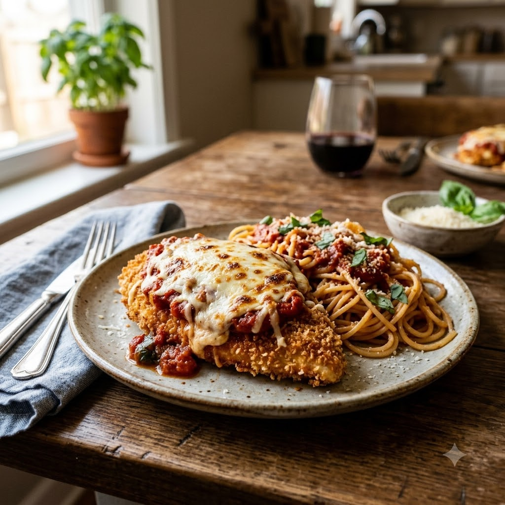

Chicken Parmesan

Chicken Parmesan
Airfryer (Fry) then (Bake) 190°C Fry 14 min + Bake 5 min — Serves 3
High-Protein • Everyday • Italian
🔥 Airfryer🍽 Serves 3
Ingredients
- 3 boneless chicken breasts, flattened
- 1/2 cup flour
- 2 eggs, beaten
- 1 cup breadcrumbs mixed with 1/4 cup grated Parmesan
- 1 cup marinara sauce
- 1 cup shredded mozzarella
- Salt & pepper to taste
- Oil spray
Method
1Preheat: Preheat the Airfryer to 190°C for 4 minutes before adding the food to the basket.
2Season chicken with salt and pepper; coat in flour, then egg, then the breadcrumb-Parmesan mix.
3Spray the chicken with oil and arrange in the basket.
4Air-fry at 190°C for 14 minutes, flipping halfway, until golden and cooked through.
5Top each piece with marinara sauce and mozzarella; bake a further 5 minutes at 190°C until the cheese melts.